Art Lab
Art-Lab is a web app for a 3D printing company. The site will serve as a place where 3D artists could bid and get 3D modeling jobs.
The users needed to have a way to view current projects, past projects and new potential projects. They would also be able to perform all the neccesary transactions to bill and receive compensation.
The work required for this project included creating the Ui design.
Process Part 1: Thumbnail Sketching

Process Part 2: Wireframing
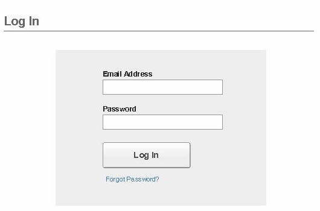
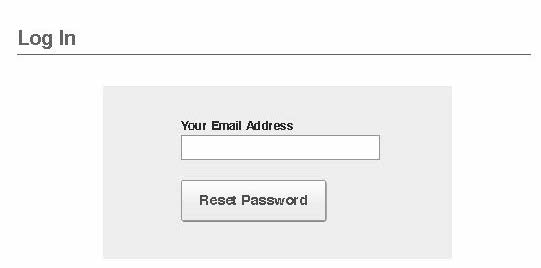
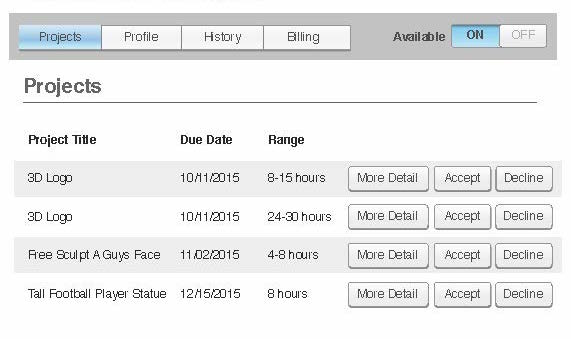

 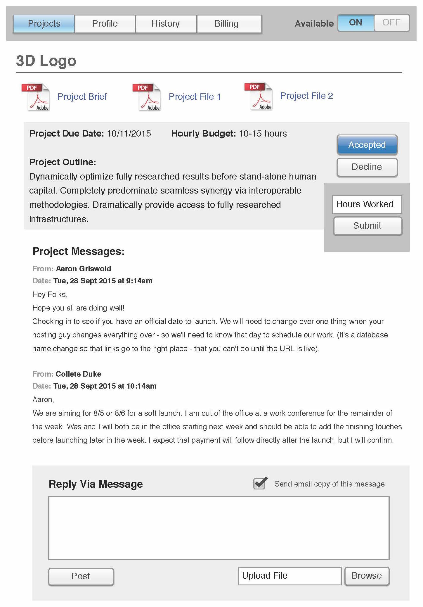
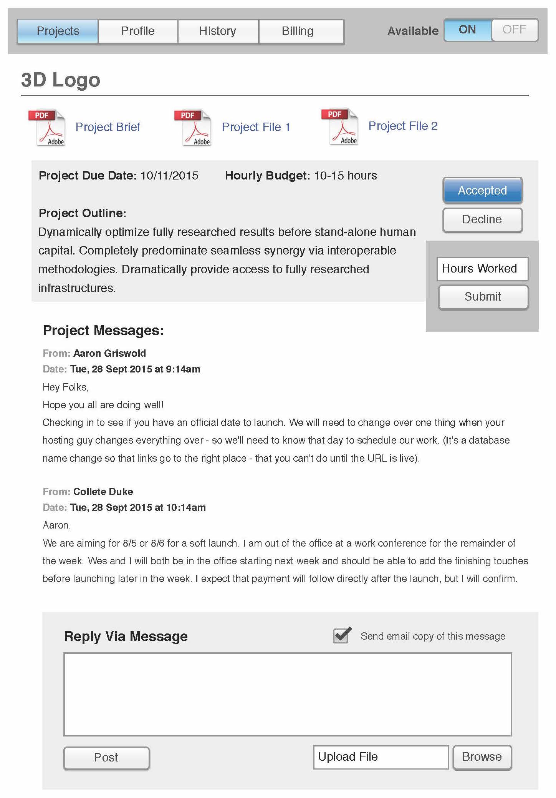

 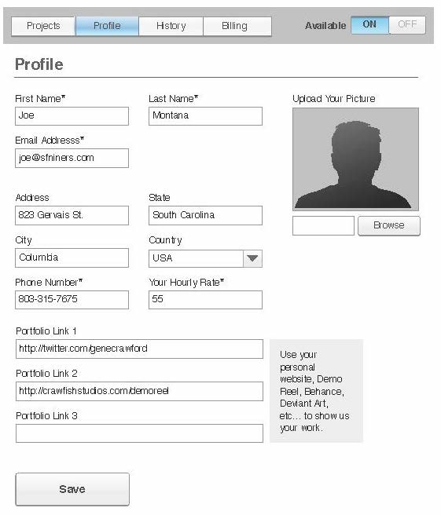
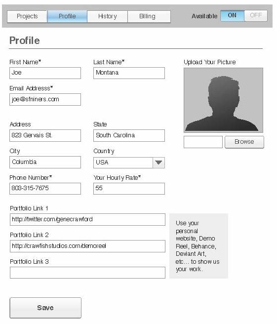
 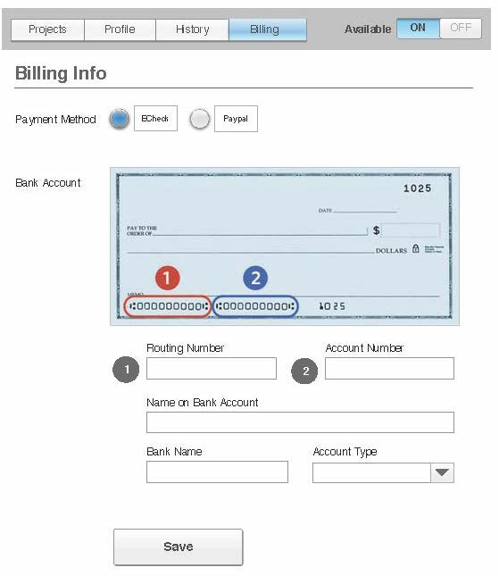
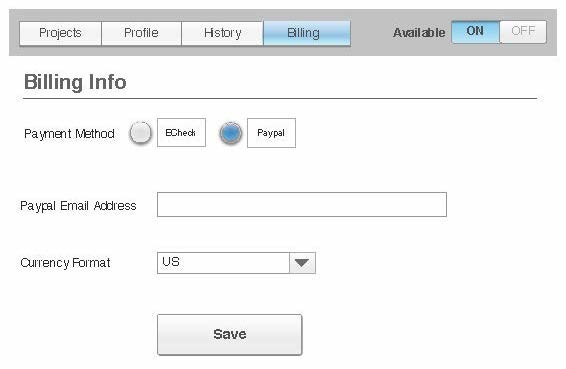
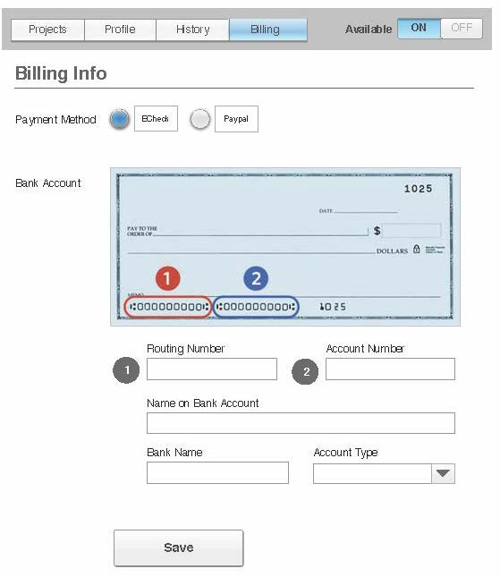
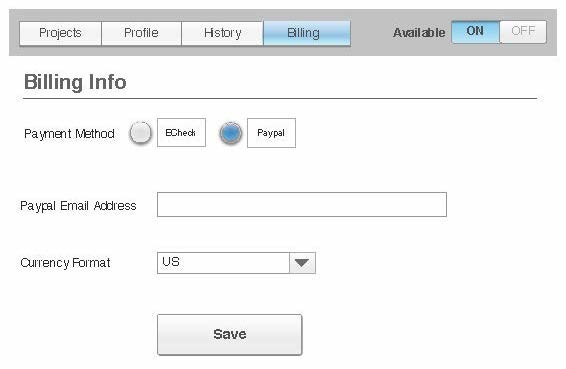
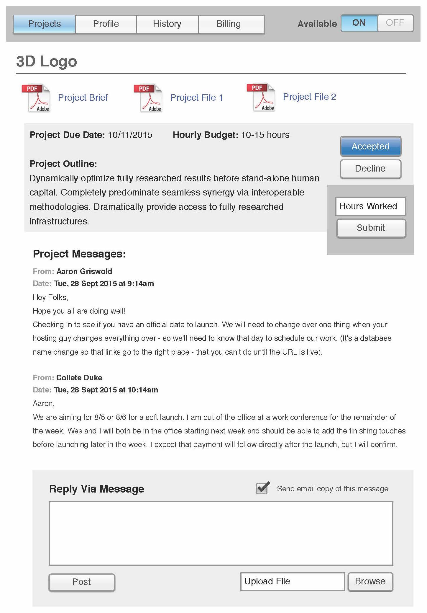
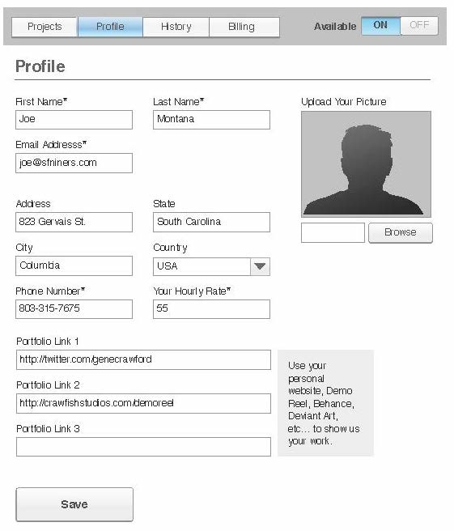
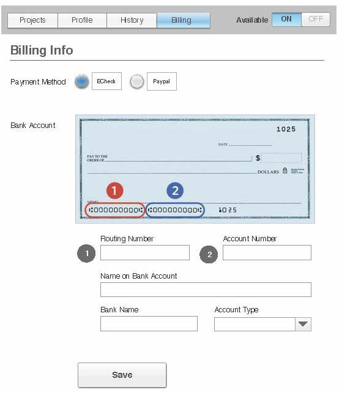
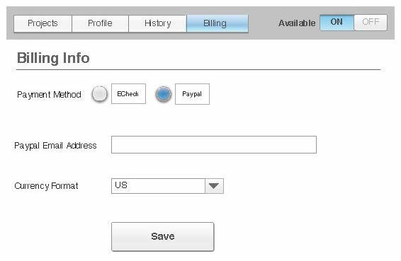
Process Part 3: Mockups
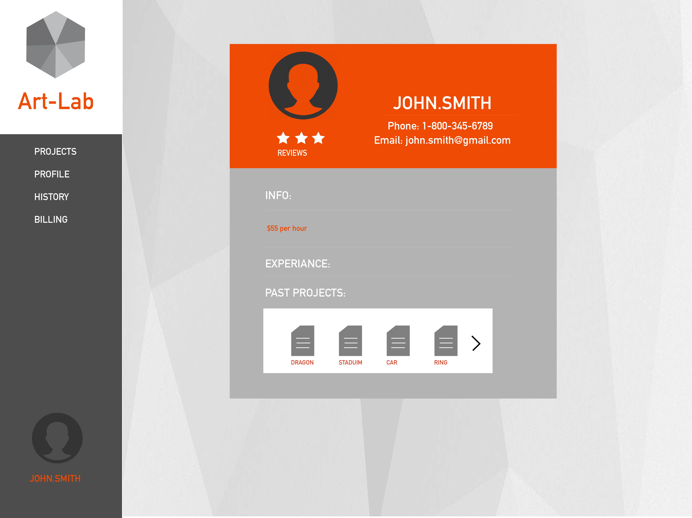


Here are some alternative designs for a couple of the pages


With mockups complete it was time to hand the designs over to a front end developer.